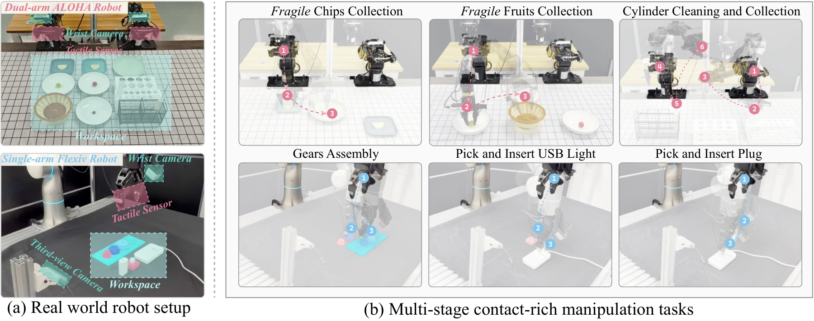
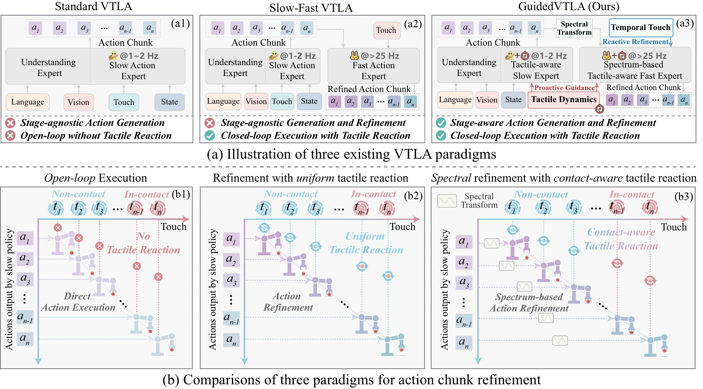
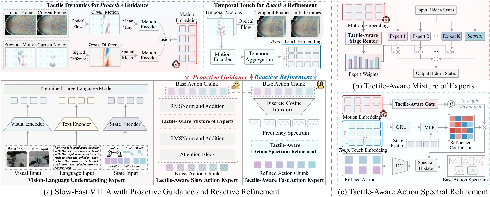

Understand the contact stage.
Cumulative tactile motion and its signed change provide complementary contact cues that guide both experts.
GuidedVTLA brings contact awareness to action generation
and tactile feedback to action refinement.

Contact dynamics help guide what to do.
Temporal touch helps refine how to do it.
Cumulative tactile motion and its signed change provide complementary contact cues that guide both experts.
Temporal tactile feedback informs low-frequency action refinement, while shared guidance modulates its strength.

Shared tactile guidance coordinates the slow and fast experts, coupling contact-aware action generation with reactive spectral refinement.
Original paper overview. Select a design to read the comparison. A dedicated visual explanation is planned.
Follow the information flow through the original method figure.

Cumulative motion and its signed change are encoded into shared guidance. This guidance conditions slow-expert routing and controls refinement strength in the fast expert.
Original method figure. The step descriptions explain the architecture; a dedicated method video is planned.
Six physical tasks across two embodiments.
Eight contact-rich tasks in UniVTAC.
Full task videos are being prepared.
Full task videos are being prepared.
Means computed over the first six UniVTAC tasks. FTP-1 results are cited in the paper. Eight-task results are compared separately. Values reflect the current manuscript.